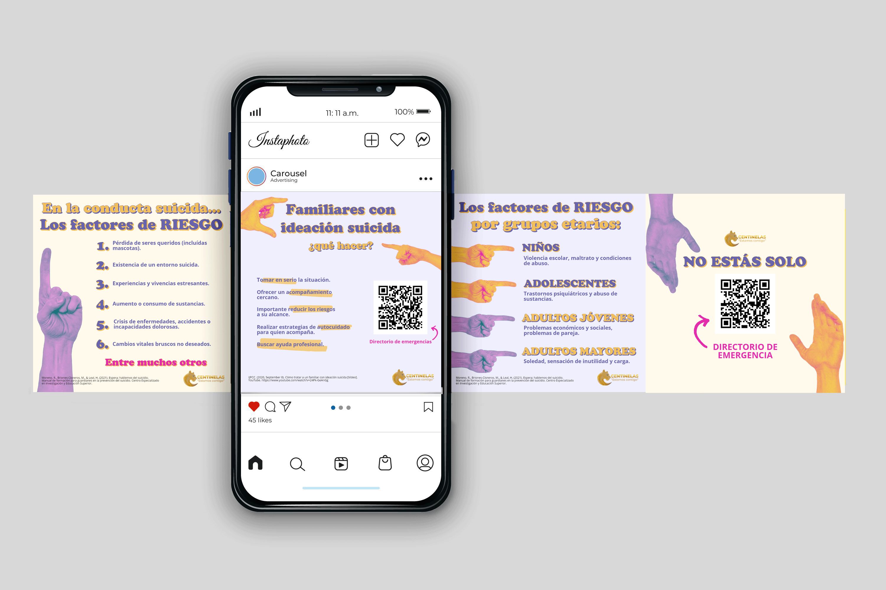

Suicide Prevention
2024

Context
This project was developed for Centinelas, a program at the National Autonomous University of Mexico (UNAM) focused on suicide prevention and the promotion of support networks through the ESPERA model. Unlike a clinical intervention, the goal of these materials was to provide accessible tools that anyone could understand and apply to offer initial support to someone experiencing emotional distress or at risk.
The work involved transforming sensitive and potentially complex information into clear, approachable, and visually accessible materials. To achieve this, I developed pieces for different formats and audiences while maintaining visual consistency, message clarity, and an approach centered on support, active listening, and stigma reduction.
Project Challenges ↓
Sensitive Communication
Addressing the topic of suicide responsibly while avoiding alarmist or stigmatizing approaches.
Accessibility
Translating specialized concepts into messages that can be understood by a broad audience.
Visual Consistency
Adapting content across different formats without losing clarity or graphic coherence.
Materials Developed